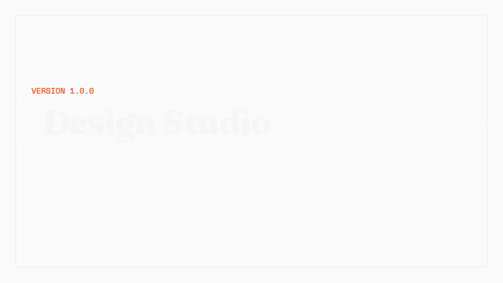

Blind room
No source context- Visual Director
Builds the visual world from product truth, constraints, screenshots and critique.
- Evaluator
Uses the rendered product, interactions and verified viewports. It never grades effort.
Design Studio keeps visual direction and evaluation away from source code, then preserves every attempt until the strongest one earns the final build.
Claude Code plugin · portable workflow contract for other agent harnesses
Product truth, audience, constraints and proof become a testable surface brief.
Three viable worlds are explored. The user selects. A visual contract is written without implementation anchors.
The Builder translates the contract into working code, states, responsive behaviour and an immutable iteration.
A fresh Evaluator uses the live page, tests interactions and scores what survived contact with the browser.
A single agent naturally designs around whatever code it has already read. Design Studio gives creative judgment and implementation different rooms, then makes the browser the meeting point.
Builds the visual world from product truth, constraints, screenshots and critique.
Uses the rendered product, interactions and verified viewports. It never grades effort.
Finds what is already true so the user is not re-interviewed and claims are not invented.
Chooses technical means, preserves behaviour and implements the selected direction faithfully.
The loop is for material improvement, not endless polishing. A standard run gets four builds. The best eligible iteration receives one fresh finish review and one correction batch.
Load product truth and the incumbent system. Classify the surface as persuade, operate, read or experience. Record assumptions instead of hiding them.
Explore three equal, viable candidates. The user chooses when available; unattended runs use a recorded seed rather than the Director's private preference.
Deterministic checks catch contrast, overflow, focus and generated-UI tells. Impeccable is used when installed. Mechanical rules never award visual quality.
The Evaluator reports observations. The Orchestrator alone applies the ordered REFINE, PIVOT, SHIP or HALT rules against history and budget.
The final site, tokens and design DNA come from the selected build. Earlier iterations remain intact, including the one that beat the latest attempt.
The largest changes are architectural. They fix places where the old workflow promised evidence it did not preserve or gave two agents authority over the same decision.
Iterations now write to their own immutable folders. Final selection can recover an earlier winner without depending on hidden commits.
FixedThe Evaluator cannot write REFINE, PIVOT or SHIP. It supplies blind evidence; the Orchestrator applies the run rules.
FixedExact contrast, spacing, overflow and token claims no longer come from screenshot-only reviewers. Deterministic evidence and visual judgment stay separate.
SplitThe Visual Director produces three viable candidates without ranking them. User choice or a reproducible seed replaces self-selection.
NewA fresh Evaluator gets one material-defect review and one correction verdict. Open items remain visible instead of triggering another private polish loop.
BoundedThe original short demo still shows the central move: direction leaves the implementation context, returns as a visual contract, and meets the code again only through the Builder and browser.

Demo media loads from the repository build.claude plugin install https://github.com/George-RD/design-studio
/reload-plugins
/design-studio:create your next surface